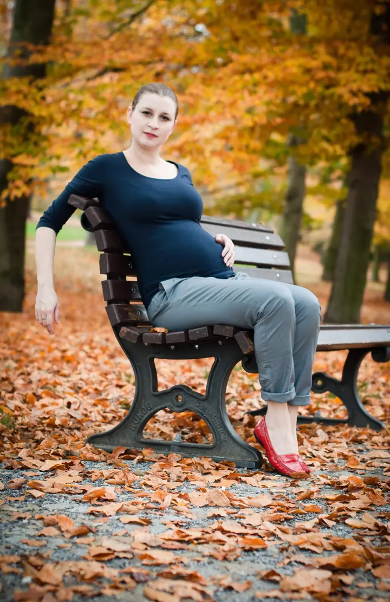
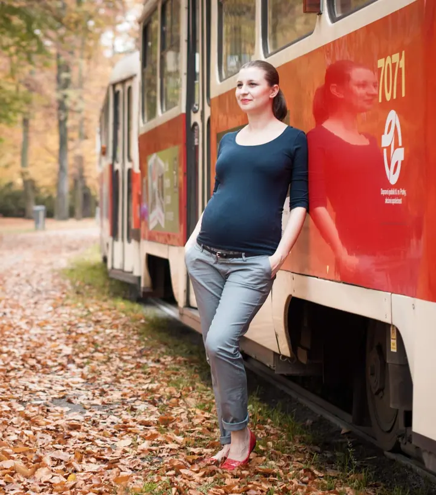

Těhotenské focení
Fotíme venku, v parku plném listí, u staré zdi nebo na ulici. Fotky jsou klidné a přirozené, barevné i černobílé.

Jmenuji se Radka Pipotová a fotím v Praze a na Dobříšsku. Nejraději fotím venku, v parku pod stromy, u staré cihlové zdi nebo na pražských schodech. Fotím hlavně maminky…
Rezervovat termínFotím v Praze a v okolí Dobříše. Za ateliérem nechodím, místo něj hledám park, ulici nebo zeď, kde je hezké světlo a kde se budete cítit dobře.

Nejčastěji fotím těhotné maminky. Bříško, ruce, pohled do dálky, nic víc není potřeba. Vedle toho ráda fotím portréty, ženské i mužské, a když se naskytne, i obyčejný život v pražských ulicích.
Podzim mám ráda, to na mých fotkách asi poznáte. Ale fotit se dá kdykoli, stačí se ozvat a domluvíme se, kdy a kde.
Co fotím
Fotíme venku, v parku plném listí, u staré zdi nebo na ulici. Fotky jsou klidné a přirozené, barevné i černobílé.
Portréty v ulicích Prahy a v přírodě, bez ateliéru a bez strojenosti. Prostě vy v dobrém světle.
Postup
Napište mi e-mail nebo zprávu přes formulář a dejte vědět, co si představujete.
Společně vybereme park nebo kousek Prahy či okolí Dobříše, kde se vám bude líbit, a čas s dobrým světlem.
Fotíme v klidu a bez spěchu. Poradím vám, jak stát a kam se dívat, zbytek necháme volně plynout.
Vyberu a upravím ty nejlepší snímky, barevně i černobíle, a pošlu vám je.
Otázky
Většinou ve chvíli, kdy už je bříško hezky vidět a vy se ještě cítíte dobře. Termín si domluvíme podle vás.
Venku v Praze a v okolí Dobříše, v parcích, na nábřeží nebo v ulicích. Místo vybereme společně.
Něco, v čem se cítíte sama sebou. Hodí se jednoduché barvy a třeba šátek nebo kabát, který k fotkám přidá barvu.
Ano, některé snímky ráda upravím i černobíle, když jim to sluší.